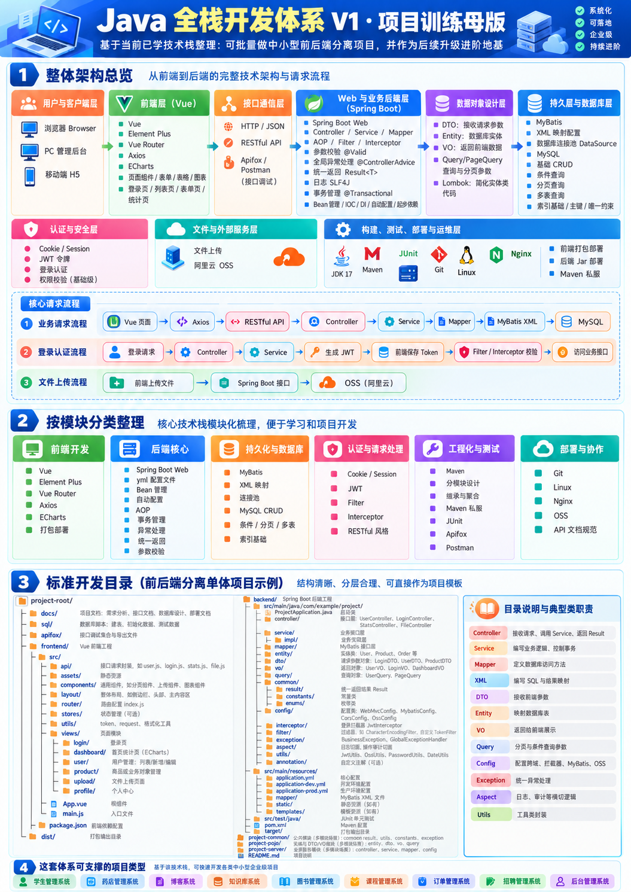

一、为什么做这个项目
学过 Java 基础、写过几个增删改查接口之后，常会遇到一些新的问题：页面上的数据究竟怎样进入数据库？接口已经返回错误，前端为什么仍然提示成功？登录之后，服务器怎样识别下一次请求？账户被禁用后，已经签发的令牌还能不能使用？代码在本地跑通，又距离可以交付差多少工作？
这些问题分别落在前端、HTTP、业务层、数据库和安全机制中。把所有框架一次性装进一个项目，虽然能很快得到一套目录，却不容易看清每一层为什么出现。
这个项目采用逐版演进的方式：先完成浏览器到数据库的最小闭环，再处理接口契约和前端组织方式，随后引入账户、安全与交付。每增加一项能力，都保留一个可以单独启动、阅读和验证的版本。
关于本文的学习方式： 这是一份结合 AI 辅助实践完成的项目学习与整理记录。它把原本分散在多轮提问、长篇视频和不同仓库中的知识，整理为可以运行、对照和验证的十个版本，帮助初学者减少反复寻找资料、判断示例是否完整的时间。你也可以把某一版代码、对应说明和运行报错交给 AI，请它解释请求链路、比较版本差异，或协助从零复现；再通过源码、官方文档和测试核对结论。希望这份文章与代码库，能为偏好动手实践的读者提供一条更清晰的 Java Web 与全栈开发入门路径。
希望通过这个过程，把几个经常分开学习的知识点连接起来：
- 请求链路： 从页面操作追踪到 HTTP、Controller、Service、Mapper 和数据库。
- 接口协作： 明确输入校验、响应结构、状态码、条件查询和分页各自的责任。
- 身份与权限： 理解 Session、Cookie、CSRF、Spring Security 和 JWT 的关系。
- 完整业务流程： 把改密、禁用、退出、密码找回和账户注销串成可验证的闭环。
- 工程交付： 补齐独立构建、数据库迁移、自动化测试、环境配置和部署说明。
项目主要面向已经掌握 Java 基础、SQL 和基本 HTML/CSS/JavaScript，准备学习 Spring Boot 与 Vue 联调的读者。前几版可以逐步跟做，后几版适合在理解 HTTP 和认证流程后继续阅读。
还没接触 Spring 或 Vue，也可以从 V01 开始：先运行页面、观察请求，再沿文件逐层阅读。配套的 从第一次运行到独立复现路线 给出预备知识、十次练习、完成标准和适合交给 AI 的代码解释任务。
二、源码地址、技术基线与目录约定
GitHub 仓库地址：
https://github.com/LingXI5499/ai-coding-portfolio
本系列位于仓库中的 java-fullstack-evolution 目录。本文功能说明与测试统计对应代码提交 693e059，各版源码链接也固定到该提交，便于对照。
2.1 技术基线
| 部分 | 本文对应的版本或选择 |
|---|---|
| Java | JDK 17，编译目标为 Java 17 |
| 后端框架 | Spring Boot 3.5.16 |
| 持久层 | MyBatis Spring Boot Starter 3.0.5，XML Mapper |
| 数据库 | MySQL 8.4；本地演示与默认测试可使用 H2 |
| 后端构建 | Maven Wrapper，固定 Maven 3.9.16 |
| 前端运行环境 | Node.js 24.x；已验证环境为 24.15.0 |
| Vue 项目 | Vue 3.5.44、Vue Router 5.4.0、Axios 1.20.0 |
| 前端构建与测试 | Vite 8.3.4、Vitest 5.0.5；浏览器回归使用 Playwright |
| V10 综合练习 | Element Plus 2.14.7、ECharts 6.1.0、OSS Java SDK 3.18.4 |
| 后续安全与交付 | Spring Security、JWT、Flyway、Actuator、OpenAPI、Nginx 配置示例 |
复现时，以每个版本的 pom.xml、package.json 和 package-lock.json 为准。前端使用 npm ci 安装锁文件中的依赖，避免跟着教程临时替换某个库的主版本。
2.2 十个版本是十份独立项目快照
十个版本按照学习顺序排列，但运行某一版时，不需要先启动前面的版本，也不读取其他版本的源码。
V01、V02 的静态页面放在后端资源目录中，由 Spring Boot 同源提供；V03 起使用独立的 frontend/，其中 V03 是原生 JavaScript 请求对照页，V04 起使用 Vue。
以 V04 为例：
V04-vue-fullstack/
├─ backend/
│ ├─ pom.xml
│ ├─ mvnw / mvnw.cmd
│ ├─ .mvn/wrapper/
│ └─ src/
│ ├─ main/java/ # Controller、Service、Mapper、DTO、VO 等
│ ├─ main/resources/
│ │ ├─ application.yml
│ │ ├─ mapper/ # MyBatis XML
│ │ └─ db/init.sql # 本版本初始化 SQL
│ └─ test/ # 后端测试与测试资源
├─ frontend/
│ ├─ package.json
│ ├─ package-lock.json
│ ├─ vite.config.js
│ └─ src/ # 页面、组件、路由与 HTTP 模块
└─ README.md
SQL 统一位于各版 backend/src/main/resources/db/。V01–V09 使用本版初始化脚本；V10 使用 db/migration/ 下的 Flyway 迁移。各版拥有独立数据库，不能把不同版本连接到同一个学习库。
2.3 十个版本一览
| 版本 | 核心主题 | 后端端口 | 页面入口端口 | 数据库 |
|---|---|---|---|---|
| V01 | 员工 CRUD、条件分页、最小联调 | 8081 | 8081 | java_fullstack_v01 |
| V02 | DTO、VO、校验与统一响应 | 8082 | 8082 | java_fullstack_v02 |
| V03 | XHR、Fetch、Axios 对照 | 8083 | 5173 | java_fullstack_v03 |
| V04 | Vue 3 单页应用与前后端分离 | 8084 | 5174 | java_fullstack_v04 |
| V05 | 注册、登录与手写 Session | 8085 | 5175 | java_fullstack_v05 |
| V06 | Session 撤销、改密与登录限制 | 8086 | 5176 | java_fullstack_v06 |
| V07 | Spring Security 接管 Session | 8087 | 5177 | java_fullstack_v07 |
| V08 | JWT 与刷新令牌轮换 | 8088 | 5178 | java_fullstack_v08 |
| V09 | 账户生命周期与权限边界 | 8089 | 5179 | java_fullstack_v09 |
| V10 | 迁移、测试与生产交付配置 | 8090 | 5180 | java_fullstack_v10 |
端口是默认值。学习时选择一版启动即可；调整后端端口时，也要修改该版 vite.config.js 中的代理目标。
2.4 对照学习地图，找到知识点在代码中的位置

图中的技术可以沿“页面 → HTTP → 业务 → 数据库”和“身份 → 权限 → 交付”两条线理解。本系列保留前几版的小步练习，在 V10 补充 Element Plus 页面、ECharts 图表、审计联表查询、私有图片上传、OSS 适配与 AOP 耗时日志。
配图标题中的“V1”是图自身的模板标识，与本文十个学习版本的编号独立。阅读时先按模块定位，再查对应版本和代码。
图中的目录是通用示意。本仓库仍采用各版 backend/、frontend/ 的实际结构，SQL 放在 backend/src/main/resources/db/；图中的公共模块和私服属于工程化扩展，不需要先搭建才能开始学习。
| 学习模块 | 可运行示例 |
|---|---|
| 前端表单、列表与路由 | V04–V10；V10 增加 Element Plus 表格、输入、分页和提示 |
| 请求与接口边界 | V01–V04 对照 CRUD、DTO/VO、HTTP 客户端与条件分页 |
| 框架原理 | 构造函数注入、自动配置、profile；V10 的存储 Bean 与 AOP 切面 |
| 多表与统计 | V10 的审计表 LEFT JOIN 账户表；状态聚合与七日曲线 |
| 账户与安全 | V05–V09 的 Session、Spring Security、JWT、权限与账户恢复 |
| 文件与外部服务 | V10 本地私有图片上传；同一接口可切换阿里云 OSS |
| 测试与交付 | JUnit、前端组件、浏览器、Flyway、MySQL CI 与部署配置 |
图中的 Lombok、Maven 多模块和私服另有选择背景：本系列保留显式模型代码和十个独立工程，相关概念与可选配置放在工程化说明中。图中的学生、图书、库存等属于后续可迁移的业务方向。逐项位置与验证范围见 技术覆盖矩阵。
三、十个版本分别做了什么
3.1 V01：先走通员工 CRUD 的完整链路
第一版解决最基本的问题：浏览器中的一次操作，怎样变成数据库中的一条记录？
员工字段包括姓名、性别、年龄、电话、部门和薪资。页面支持新增、按 ID 查询、修改、删除，以及按姓名、部门、性别和年龄区间进行条件分页查询。
后端按职责分层：Controller 接收 HTTP 请求，Service 处理业务与事务，Mapper 定义持久化操作，XML 中编写参数化 SQL。新增员工时，由数据库生成主键，服务层再查询并返回保存后的记录。
浏览器表单
↓ HTTP / JSON
EmployeeController
↓
EmployeeServiceImpl
↓
EmployeeMapper + EmployeeMapper.xml
↓
MySQL employee 表
这一版保留同源静态页面，暂时减少前端工程配置带来的干扰。阅读重点是请求方法、JSON 字段、主键、事务和 SQL 参数绑定。
建议验证： 新增一条记录，修改部门，刷新页面，最后删除；切换到 MySQL 后，重启应用再检查尚未删除的数据是否仍然存在。V01 尚未加入认证，适合本机学习环境。
3.2 V02：让接口具备明确的输入和输出边界
接口跑通后，需要进一步明确：调用方能够提交哪些字段，能够拿到哪些字段，输入错误时会得到什么结果。
V02 保留员工业务，引入创建与修改请求 DTO、Bean Validation、公开 VO、统一响应体和全局异常处理。Entity 对应持久化模型，DTO 接收允许写入的字段，VO 决定对外展示内容。员工 VO 不直接暴露数据库内部时间字段。
V02 起响应包含 code、message、data、traceId。同时保留真实 HTTP 语义：创建成功返回 201，参数无效返回 400，记录不存在返回 404，冲突返回 409。前端能够据此区分输入问题、业务冲突与服务异常。
建议验证： 提交空姓名、越界年龄、负薪资和不存在的 ID，观察 Network 中的状态码与响应；检查响应中是否出现了不应公开的内部字段。
3.3 V03：对照 XHR、Fetch 和 Axios 的请求行为
同一个员工接口，换一种前端请求方式，为什么错误处理代码就不同了？V03 通过同一套 API 对照三种 HTTP 客户端。
XHR 以事件回调为基础，在项目中包装为 Promise；Fetch 需要显式检查 response.ok；Axios 默认会把非成功状态作为 Promise 拒绝处理。三者使用相同的 CRUD 与分页契约，便于直接比较。
这一版开始拆分 backend/ 与 frontend/。前端由 Vite 启动，浏览器请求相对路径 /api，开发代理转发到后端。浏览器看到的请求保持同源，不需要为了联调开放任意来源的跨域访问。
还要区分两种失败：HTTP 400 表示已经收到服务端响应；网络失败表示没有获得可用响应。客户端取消请求，也不能保证服务器已经完成的数据库写入会被撤销。
建议验证： 分别用三种客户端查询同一组筛选条件，核对分页元数据；再观察参数错误、断网与取消请求的差别。
3.4 V04：使用 Vue 组织真正的前端应用
当列表、表单、详情和加载状态逐渐增多，手动维护 DOM 的成本也会增加。V04 保留后端员工 API，把前端升级为 Vue 3 单页应用。
Vue 管理响应式状态，Vue Router 组织列表、创建、详情、编辑和 404 页面，Axios 模块负责 HTTP 调用。表单只提交允许修改的字段，后端仍负责最终校验。
列表页已经包含查询、重置、每页条数、上一页、下一页、总条数、加载状态和空状态。分页组件与列表状态逻辑都放在本版前端内部，其他版本无需提供公共源码。
页面进入时从后端加载数据，写入成功后重新读取结果。这样可以把前端显示状态与数据库真实状态对应起来，也方便排查刷新后数据不同步的问题。
建议验证： 从列表进入详情和编辑页，在详情地址直接刷新；组合查询条件、翻页，再删除最后一页的最后一条记录，检查页码是否回到有效范围。
3.5 V05：切换到账户业务，理解 Session 登录
从 V05 开始，业务主题由员工管理切换为账户体系。员工接口在这一版移除，学习重点转向身份状态的建立与恢复。
注册时，数据库保存账户资料和 BCrypt 密码哈希；登录成功后，服务器通过 HttpSession 保存用户 ID 与身份版本，浏览器通过会话 Cookie 参与后续请求。页面刷新时，再通过 /api/auth/me 恢复当前账户信息。
这一版使用手写拦截器展示认证过程，同时保留基本保护：登录更新 Session ID，退出销毁 Session；Cookie 设置 HttpOnly 和 SameSite；写请求验证服务端签发的 CSRF Token，注册和登录也包含在内。
这里容易混淆的是 Cookie 与 Session：Cookie 随浏览器请求发送，Session 中的身份数据保存在服务端。前端显示“已经登录”并不能代替服务端身份校验。
建议验证： 注册、登录、刷新、查看当前账户、退出，再访问受保护接口；在浏览器 Application 中观察 Cookie 属性，移除 CSRF 请求头后验证写请求被拒绝。
3.6 V06：补齐改密、撤销和失败登录限制
能够登录以后，还要回答：连续猜错密码怎么办？修改密码之后，旧会话是否仍然可用？
V06 在账户流程中加入失败登录限制与修改密码。失败计数采用固定窗口，同一限制键在 60 秒窗口内达到 5 次失败后，后续尝试会受到限制；窗口恢复由可控时钟测试覆盖。
会话保护沿用账户状态和 auth_version 检查。修改密码时增加身份版本，后续请求若携带旧版本身份，就会被拒绝。这样把“更新数据库密码”与“撤销已有登录状态”连接起来。
Session 配置还包含 20 分钟闲置超时。配置值与真正等待超时后的运行行为是两个验证层次，本文不会把配置存在写成已经完成真实等待验收。
建议验证： 连续输入错误密码，观察 429；修改密码后，分别使用新旧密码登录，并验证旧会话失效。当前限流存储在单进程内存中，部署多实例时还需要共享限流方案。
3.7 V07：由 Spring Security 接管 Session
V07-spring-security-session 源码与运行说明
手写认证便于理解流程，但会话上下文、过滤顺序、登录成功失败处理和权限检查，需要持续维护。V07 把通用认证工作交给 Spring Security。
SecurityFilterChain 在 Controller 之前处理 CSRF、身份恢复和授权；AuthenticationManager 负责认证；账户服务继续提供 BCrypt 校验与登录限制。业务过滤器补充账户状态和身份版本检查。
本版加入 USER、ADMIN 的访问差异，以及管理员用户列表。管理员可以按关键字、账户状态和角色进行条件分页；普通用户直接请求该接口仍会得到 403，前端是否显示菜单不会改变服务端权限。
还有一处需要对照客户端的契约变化：V07 登录提交 application/x-www-form-urlencoded，由框架表单登录过滤器接收；其他版本的登录使用 JSON。
建议验证： 对比未登录的 401 与权限不足的 403；使用普通账户访问管理员接口；检查登录请求的 Content-Type。管理员通过数据库所有者为已注册账户显式授权，没有公开提权接口或预置管理员密码。
3.8 V08：理解 JWT、访问令牌和刷新令牌
V08 将身份传递方式切换为 JWT，重点是短期访问凭据与长期刷新凭据如何配合。这是另一种认证方案的实践，选择 Session 还是 JWT，仍取决于系统场景。
| 凭据 | 本项目中的用途与保存方式 |
|---|---|
| Access Token | 5 分钟有效的 JWT；前端仅放在内存中，通过 Authorization: Bearer ... 发送 |
| Refresh Token | 7 天有效的随机凭据；放在 HttpOnly Cookie，数据库只保存 SHA-256 摘要 |
访问令牌校验固定算法 HS256，并检查签名、签发方、受众、有效期与必要声明。JWT 的签名用于校验内容完整性，Payload 可以被解码读取，因此不放密码等秘密。
刷新时，服务端在事务中一次性消费旧刷新凭据，再签发后继凭据；如果检测到旧凭据被重放，会撤销对应令牌家族。Cookie 刷新端点单独进行 CSRF 校验，不会因为请求附带 Bearer 头就跳过保护。
建议验证： 刷新页面后恢复登录、访问令牌过期后刷新、旧刷新凭据重用和缺少 CSRF 的刷新请求。当前设备退出撤销刷新凭据，已签发访问令牌仍可使用到 5 分钟有效期结束；每次受保护请求仍检查账户状态与身份版本。
3.9 V09：把账户从“能登录”扩展为完整生命周期
账户体系还需要处理资料修改、密码遗忘、异常设备和账号状态变化。V09 将这些操作放进完整业务流程。
- 个人资料： 只修改当前认证主体的昵称和邮箱，不接受客户端指定其他用户 ID。
- 全设备退出： 增加身份版本，并撤销刷新凭据，使旧访问与刷新身份失效。
- 管理员管理： 查询用户、禁用和恢复账户；状态修改在服务端验证 ADMIN，并禁止管理员通过该接口修改自身状态。
- 密码找回： 重置凭据只保存摘要，15 分钟有效、只能使用一次；包含限流、统一对外响应和邮件失败处理。
- 账户注销与审计： 注销采用 DELETED 软删除状态，撤销凭据，保留用户行与关联审计；审计记录固定操作类型和时间，不记录密码或令牌。
本地开发邮件写入后端工作目录的 .local-mail/，方便完成重置流程。该目录被 Git 忽略，也没有公开 HTTP 读取接口。生产环境改用 SMTP 适配器。
这里的“填写邮箱”还没有包含邮箱所有权验证。真实投产前，需要继续补齐邮箱确认、邮件可达性和账户恢复策略。
建议验证： 修改当前账户资料，尝试加入越权字段，执行全设备退出；申请重置、完成重置，再次使用同一凭据；由管理员禁用账户后，验证旧访问身份被拒绝。
3.10 V10：补齐可构建、可迁移、可检查的交付过程
最后一版处理交付过程：换到一个空数据库和新的运行环境时，项目能否按照固定步骤建立结构、构建产物并检查状态？
V10 在前一版账户能力上加入：
| 能力 | 具体内容 |
|---|---|
| 数据库迁移 | Flyway 顺序执行 V1 账户表、V2 刷新凭据、V3 重置与审计表 |
| API 文档 | 本地提供 OpenAPI JSON 与 Swagger UI，生产配置关闭 |
| 健康检查 | /actuator/health 仅返回必要状态 |
| 生产配置检查 | 校验数据库、JWT 密钥、邮件参数与 Secure Cookie 等条件 |
| 部署配置 | 提供 Nginx 代理与 systemd 服务示例 |
| 自动化验证 | 十版后端测试、八版前端测试与构建、真实浏览器流程及 MySQL CI |
| 综合页面 | Element Plus 组件、ECharts 状态饼图与七日活动折线图 |
| SQL 练习 | 审计与账户 LEFT JOIN、条件分页、GROUP BY 与日期聚合 |
| 文件上传 | 图片验证、重新编码、所属账户、配额、私有读取与回滚补偿 |
| 外部适配 | 默认本地存储，可通过配置切换真实 OSS SDK 适配器 |
| 框架机制 | 存储接口的 IoC 注入、固定操作的 AOP 耗时日志 |
| 恢复说明 | 备份、隔离恢复验证、迁移失败处理和应用回退前提 |
迁移脚本位于 backend/src/main/resources/db/migration/。V1–V3 建立账户、刷新、重置与审计结构，新增 V4 建立上传元数据表；文件的 user_id 也只做逻辑关联。首次使用 V10 时创建新库，由 Flyway 建表；不要把 V09 的初始化脚本导入 V10，也不要随意改写已经执行过的迁移文件。
登录后可进入“文件练习”；管理员还可以进入“统计与审计”。图表数据由数据库聚合，审计列表按相同条件计数并联表分页。上传只接受真实 PNG/JPEG，限制输入与重新编码后大小、像素和每账户数量；下载先校验所有权，前端通过 Bearer 请求获取 Blob 后预览。数据库失败时补偿删除存储对象，进程崩溃与补偿失败仍需要定期对账。
交付产物是后端 JAR 和前端 dist/ 内容。部署时由 Nginx 同域提供静态页面并代理 /api，服务进程通过仓库之外的环境配置取得凭据。
建议验证： 对空库启动，查询 Flyway 历史表，检查健康端点和本地 API 文档；在目标服务器进一步验收 HTTPS、邮件、权限与恢复。production-ready 是该版目录名，本文能够确认的是配置与自动化验证已交付，真实生产部署仍需目标环境验收。
四、把条件查询和分页做完整
本项目已经实现条件分页。员工列表位于 V01–V04，管理员用户列表位于 V07–V10；V05、V06 主要操作当前账户，没有开放全体用户列表。
4.1 请求参数和返回结果
员工条件包括姓名包含、部门包含、性别精确匹配，以及 18–70 岁的年龄区间，多个条件按 AND 组合。例如：
GET /api/employees?name=张&department=研发&minAge=25&maxAge=40&page=2&pageSize=10
管理员接口支持 keyword、status、role。关键字匹配用户名或昵称，再与状态、角色条件组合；调用者仍须具备 ADMIN 权限。
GET /api/admin/users?keyword=learner&status=ACTIVE&role=USER&page=1&pageSize=10
公共分页规则如下：
| 参数 | 默认值 | 规则 |
|---|---|---|
page |
1 | 从 1 开始，范围 1–1000000 |
pageSize |
10 | 范围 1–100；页面提供 5、10、20、50、100 |
分页对象包含以下内容。这里以 21 条匹配记录的第三页为例，员工字段仅节选：
{
"records": [
{
"id": 21,
"name": "教学员工",
"department": "研发部",
"age": 25
}
],
"total": 21,
"page": 3,
"pageSize": 10,
"totalPages": 3
}
V01 直接返回这个对象；V02 起放在统一响应的 data 中。前端要读取 records，不能再把整个响应数据当作员工数组。
没有匹配数据时，records=[]、total=0、totalPages=0。合法页码超过最后一页时，返回空记录与真实总数；page=0、pageSize=101、类型错误或倒置的年龄区间则返回 400。
4.2 数据库与页面怎样配合
后端使用相同条件执行 COUNT 和当前页查询，避免总条数与列表筛选范围不一致。下面是简化的预编译 SQL：
SELECT COUNT(*)
FROM employee
WHERE department LIKE ? ESCAPE '!';
SELECT id, name, gender, age, phone, department, salary
FROM employee
WHERE department LIKE ? ESCAPE '!'
ORDER BY id ASC
LIMIT ? OFFSET ?;
偏移量为 (page - 1) * pageSize。XML Mapper 复用条件片段，使用 #{} 绑定参数；包含查询还会转义输入中的 %、_、!，让这些字符按普通搜索字符处理。两次查询在服务层的只读事务中执行，结果按 ID 升序返回。
页面提交新条件或切换每页条数时回到第一页；翻页保留已提交的条件；删除或状态变更使最后一页消失时，重新查询有效页。Vue 列表还会忽略旧请求的迟到结果，避免快速筛选时旧数据覆盖新数据。
这种 COUNT + LIMIT/OFFSET 分页适合本项目的常规列表。包含搜索、深分页和总数统计都有成本，跨请求的数据变化也可能造成记录位移；海量数据场景需要继续结合执行计划、索引、游标分页和实际负载评估。
源码说明见 条件查询与分页指南。
五、数据库关联统一使用逻辑外键
本系列所有表之间都采用逻辑关联，不创建物理外键约束。例如刷新凭据、重置凭据和审计记录通过 user_id 对应 app_user.id，由服务层检查账户是否存在、状态是否允许操作。
app_user.id
├── refresh_token.user_id
├── password_reset.user_id
└── audit_event.user_id
以上表示业务关联，数据库不建立物理外键约束。
采用逻辑关联后，应用需要承担一致性责任：关联字段建立必要索引；写入前校验主体；相关操作使用事务；注销时按照约定保留用户父行和审计，并撤销凭据。V08–V10 在资源目录中提供 db/orphan-check.sql，可只读检查孤儿记录。
主键、唯一约束和字段 CHECK 仍然保留。逻辑外键的选择不影响使用这些约束保证单表数据规则。
六、怎样开始运行和阅读
安装顺序与下载入口集中在文末附录。准备好 Git 和 JDK 17 后，可以先运行同源版本；准备好 Node.js 24 后，再运行独立前端。
6.1 获取源码
在自行选择的开发目录打开 PowerShell：
git clone https://github.com/LingXI5499/ai-coding-portfolio.git java-fullstack-lab
cd java-fullstack-lab/java-fullstack-evolution
需要严格复现本文时，可以在干净工作区检出前面标注的代码提交；日常学习也可以跟随仓库后续更新，并以对应版本 README 为准。
6.2 先运行 V01：减少第一次启动的准备工作
从 java-fullstack-evolution/ 进入后端：
cd V01-employee-crud/backend
.\mvnw.cmd -v
.\mvnw.cmd test
.\mvnw.cmd spring-boot:run '-Dspring-boot.run.profiles=demo'
打开 V01 本地页面。demo 使用内存 H2，方便先观察页面和请求链路；停止进程后数据清空。要验证持久化，请按附录创建 MySQL 数据库并使用默认配置启动。
6.3 再运行 V04：体验 Vue 与后端联调
在两个终端中，分别从 java-fullstack-evolution/ 执行：
# 终端一：后端，先用内存演示模式
cd V04-vue-fullstack/backend
.\mvnw.cmd spring-boot:run '-Dspring-boot.run.profiles=demo'
# 终端二：前端
cd V04-vue-fullstack/frontend
npm.cmd ci
npm.cmd test
npm.cmd run dev
打开 V04 本地页面，通过 Network 核对筛选参数、请求方法、响应状态和分页结果。切换为 MySQL 时，完成附录中的建库、导入和环境配置，再去掉 demo 启动参数。
V05–V10 的启动方式相同：进入所选版本的后端和前端目录，使用本版端口。先注册自己的学习账户再登录，默认没有现成管理员账户。V10 的 MySQL 建表流程由 Flyway 执行，见附录。
学习顺序可以分成三段：先用 V01–V04 理解数据和接口，再用 V05–V07 理解会话与权限，最后阅读 V08–V10 的令牌、账户恢复和交付过程。对照相邻版本时，先比较请求链路与 API，再比较新增类、数据库表和测试。
七、验证结果与目前边界
本文对应提交的验证结果如下。后端执行 clean verify，前端执行 npm ci、npm test 和 npm run build，再以真实 Chromium 操作十个版本。
| 版本 | 后端测试通过数 | 前端测试通过数 | 构建与浏览器流程 |
|---|---|---|---|
| V01 | 7 | 同源静态页 | 通过 |
| V02 | 10 | 同源静态页 | 通过 |
| V03 | 10 | 6 | 通过 |
| V04 | 10 | 6 | 通过 |
| V05 | 6 | 4 | 通过 |
| V06 | 9 | 4 | 通过 |
| V07 | 16 | 8 | 通过 |
| V08 | 21 | 8 | 通过 |
| V09 | 29 | 8 | 通过 |
| V10 | 44 | 16 | 通过 |
| 合计 | 162 | 60 | 十版后端、八版前端、十版浏览器流程 |
本地后端与浏览器验证使用 H2；GitHub Actions 另使用 MySQL 8.4 隔离数据库执行后端测试和十版浏览器流程，其中 V01 还会重启后端验证记录仍在。条件分页覆盖超过 200 条数据、组合筛选、参数边界、字面通配符、页码回退和管理员权限。
可核对 GitHub Actions 验证工作流 与 版本化验证记录。新增用例覆盖私有图片、事务补偿、配额、完整性、联表聚合、AOP 日志隐私、图表释放及真实 OSS SDK 的环回协议。真实 OSS 账号、SMTP、邮箱所有权验证、目标服务器 Nginx/TLS、生产账户权限、备份恢复、真实闲置超时以及性能容量仍需进一步验收。
后续如果用于实际业务，应结合真实用户量、部署方式和恢复要求继续完善。阅读本系列时，尤其要保留三个判断：权限由服务端执行；令牌需要明确撤销规则；可以构建和通过测试之后，还需要在目标环境验证交付条件。
附录 A：需要准备哪些软件
以下以 Windows 11 x64 + PowerShell 为例。已有符合要求的环境可以直接复用，安装后分别执行检查命令。软件小版本会更新，Java 保持 17、Node.js 保持 24.x、MySQL 保持 8.4 系列，项目依赖由构建文件锁定。
| 工具 | 是否需要单独安装 | 用途与官方入口 |
|---|---|---|
| JDK 17 | 必需 | 编译与运行后端；Temurin 17 下载 |
| Git for Windows | 按本文克隆方式需要 | 获取和更新源码；官方下载 |
| Node.js 24.x 与 npm | V03–V10 需要 | 安装前端依赖、测试和构建；官方下载 |
| MySQL Community Server 8.4 | 持久化运行需要 | 保存业务数据；8.4 系列下载 |
| Microsoft Visual C++ x64 运行库 | Windows MySQL 所需前置组件 | 按系统现有状态安装或修复；微软下载说明 |
| IntelliJ IDEA | 推荐开发工具 | 阅读、调试和运行后端；官方下载 |
| Visual Studio Code | 可选前端编辑器 | 编辑 Vue，配合官方扩展；Windows 安装说明 |
| Edge 或 Chrome | 需要一个现代浏览器 | 浏览页面、使用 Network/Application；Edge 下载、Chrome 下载 |
| DBeaver Community | 可选 | 图形化查看数据库；官方下载 |
| Bruno | 可选 | 手动调试 HTTP API；官方下载 |
| Chromium for Playwright | 跑浏览器回归时需要 | 通过项目内 Playwright 命令下载，见附录 F |
| Nginx | 部署 V10 时按需准备 | 静态资源与反向代理；官方下载 |
Maven Wrapper 已随每个后端提交，无需额外安装全局 Maven。H2、MySQL JDBC 驱动、Spring Security、Flyway、OpenAPI 和测试库由 Maven 下载；Vue、Router、Axios、Vite、Vitest、Playwright 由本版 npm ci 安装，无需再安装全局 Vue CLI。
附录 B：安装 JDK、Git 和 Node.js
B.1 JDK 17 与 JAVA_HOME
从 Temurin 下载页 选择 Java 17、Windows、x64、JDK 和 MSI 安装包。安装时启用添加 PATH，并按需要启用设置 JAVA_HOME；具体界面见 Adoptium Windows MSI 说明。已有可用 JDK 17 时直接复用。
手动配置时，在 Windows 搜索“编辑系统环境变量”，打开“环境变量”：
- 将
JAVA_HOME指向实际 JDK 根目录，例如C:\Dev\Java\jdk-17。这个示例路径需要替换，末尾不加bin。 - 在 PATH 中加入
%JAVA_HOME%\bin，检查是否有其他 Java 启动路径排在它前面。 - 关闭旧终端，重新打开 PowerShell 后检查。
$env:JAVA_HOME
where.exe java
java -version
javac -version
& "$env:JAVA_HOME\bin\java.exe" -version
进入某版 backend/ 后，再执行：
.\mvnw.cmd -v
终端的 java -version 由 PATH 决定，Wrapper 通常优先使用 JAVA_HOME。两者可能指向不同版本，所以后端构建还要核对 Wrapper 输出的 Java version 是否为 17。Wrapper 首次运行会下载固定版本 Maven，机制见 Apache Maven Wrapper 文档。
B.2 Git for Windows
从 Git 官方 Windows 下载页 获取与系统架构匹配的安装程序。安装过程中选择允许从命令行使用 Git 的 PATH 选项，其余按实际需要配置。重新打开 PowerShell：
git --version
出现版本信息后，执行正文中的 git clone。克隆公开仓库无需预先配置提交身份；后续自行提交代码时，再在自己的仓库中配置身份信息。
B.3 Node.js 24.x 与 npm
从 Node.js 官网 选择 24.x LTS、Windows x64、MSI，按向导安装 Node.js、npm 与 PATH。若要精确复现已验证环境，可在 24.15.0 官方归档 中选择 node-v24.15.0-x64.msi。
node -v
npm.cmd -v
确认 node -v 为 v24 开头，再进入目标 frontend/ 执行：
npm.cmd ci
npm.cmd test
npm.cmd run build
前端项目要求 Node 24.x。npm ci 会依据锁文件安装依赖，需要在包含本版 package-lock.json 的目录执行。PowerShell 若拦截 npm.ps1，可以使用上面的 npm.cmd，无需修改全局执行策略。
附录 C：开发工具和插件怎样配置
C.1 IntelliJ IDEA：打开后端与固定 JDK
安装 IntelliJ IDEA 后，选择目标版本的 backend/pom.xml 打开并作为 Maven 项目导入。第一次导入需要等待依赖下载。
检查三处 Java 设置：Project Structure 中的 Project SDK 为 17；Settings → Build Tools → Maven 中使用项目 Wrapper，Runner JRE 为 17；应用 Run Configuration 的 JRE 也选择 17。Maven 导入使用的 JDK 也应保持一致。
| 工具或插件 | 用法 |
|---|---|
| Java、Maven 支持 | 使用 IDEA 对应内置支持，确认没有被禁用 |
| JavaScript and TypeScript、Vue.js | 在 IDEA 中开发 Vue 时使用；Settings → Plugins 中检查并安装 Vue.js |
Vue (Official)，ID 为 Vue.volar |
使用 VS Code 编辑前端时安装 |
| 浏览器 Network、Application | 浏览器自带，用来检查 HTTP、Cookie 和存储 |
IDEA 官方 Vue 支持涉及 Ultimate 订阅能力，安装步骤与适用条件见 JetBrains Vue 文档 和 Vue.js 插件页。也可以使用 IDEA 处理 Java，使用 VS Code 处理前端，命令行运行不受 Vue 编辑插件影响。
项目中的 XML Mapper 可以直接阅读和运行；Lombok、代码生成器和 MyBatis 导航插件都不是运行前置条件。
C.2 VS Code：安装 Vue 官方扩展
按 Windows 安装说明 安装 VS Code，打开本版 frontend/。按 Ctrl+Shift+X 进入扩展页，搜索并安装 Vue (Official)，也可按扩展 ID Vue.volar 查找。
官方扩展提供 .vue 文件的语言支持。若已经启用了面向旧项目的 Vetur，阅读 Vue 工具指南 并在本 Vue 3 工作区禁用冲突扩展，避免重复诊断。
C.3 可选的数据库和接口工具
需要图形化数据库工具时，从 DBeaver Community 下载 Windows 安装包。安装后新建 MySQL 连接，填写 localhost、实际端口、数据库名与本机账户；首次连接按提示下载驱动并测试连接。只查看表结构和索引即可，不要在关系设计界面额外创建物理外键。
需要独立接口客户端时，从 Bruno 下载页 安装 Windows 版本，创建请求并填写方法、路径、请求头和请求体。V05 起要按本版约定先获取 CSRF Token 并保留 Cookie；V07 的登录使用表单编码；V08 起受保护 API 使用 Bearer 头。浏览器页面已经封装这些过程，第一次体验可以先使用页面。
附录 D：安装 MySQL 8.4 并初始化数据库
D.1 安装 Server 与配置服务
先检查 Windows 是否已有满足要求的 Microsoft Visual C++ x64 运行库；缺少时按 微软官方说明 安装或修复。MySQL 8.4 的 Windows 前置要求见 MySQL 安装手册。
在 MySQL Community Server 8.4 下载页 选择 Windows x64 MSI。安装的是数据库 Server；DBeaver 或 Workbench 是连接工具，不能代替 Server。
MSI 完成后运行随附的 MySQL Configurator：
- 本机学习可选择 Development 类型。
- 配置 TCP/IP 与端口，本文示例为 3306；保留本地使用所需的访问范围。
- 设置自己的 root 管理密码，记录到个人密码管理工具。
- 配置为 Windows 服务，记录实际服务名称，并应用配置。
各步骤含义可对照 MySQL Configurator 官方流程。将实际安装目录的 bin 加入 PATH，例如 C:\Program Files\MySQL\MySQL Server 8.4\bin，重新打开终端检查：
Get-Service *mysql*
mysql --version
mysql -u root -p
在 MySQL 客户端内执行：
SELECT VERSION();
mysql --version 检查的是客户端，SELECT VERSION() 才能确认所连服务端。服务未运行时，可以通过 Windows“服务”管理界面启动实际配置的 MySQL 服务。
D.2 V01–V09：以 V04 为例导入本版 SQL
在 V04-vue-fullstack/backend/ 目录打开 PowerShell，再执行 mysql -u root -p。输入管理密码后执行：
CREATE DATABASE java_fullstack_v04
CHARACTER SET utf8mb4
COLLATE utf8mb4_unicode_ci;
USE java_fullstack_v04;
SOURCE src/main/resources/db/init.sql;
SHOW TABLES;
SHOW INDEX FROM employee;
SOURCE 路径相对于启动客户端时的工作目录，且应使用 MySQL 命令行客户端执行。其他版本使用对应的独立库名与本版脚本。V05 起主要表为 app_user，V08 加入 refresh_token，V09 再加入 password_reset 和 audit_event。
为应用创建开发账户。下面的密码是占位符，必须替换为自己设置的强密码；若账户已存在，则沿用该账户并检查授权。
CREATE USER 'lab'@'localhost'
IDENTIFIED BY '<替换为本机设置的强密码>';
GRANT SELECT, INSERT, UPDATE, DELETE
ON `java\_fullstack\_v04`.*
TO 'lab'@'localhost';
SHOW GRANTS FOR 'lab'@'localhost';
管理账户负责建库建表，应用账户只取得该学习库的读写权限。上面的数据库级授权转义了下划线，避免按通配符解释库名，规则见 MySQL GRANT 文档。初始化脚本只在对应的新库使用；切换版本时核对库名。
D.3 V10：使用 Flyway 建表
V10 先创建空库：
CREATE DATABASE java_fullstack_v10
CHARACTER SET utf8mb4
COLLATE utf8mb4_unicode_ci;
本机学习可以为上面已经创建的账户增加 V10 库的迁移与读写权限：
GRANT SELECT, INSERT, UPDATE, DELETE, CREATE, ALTER, INDEX
ON `java\_fullstack\_v10`.*
TO 'lab'@'localhost';
配置 V10 连接后使用默认配置启动，Flyway 会执行四份迁移。不要额外导入其他版本的 init.sql。启动成功后查询：
USE java_fullstack_v10;
SELECT version, description, success
FROM flyway_schema_history
ORDER BY installed_rank;
应能看到 V1–V4 的成功记录。自定义 V10 MySQL URL 时保留 connectionTimeZone=UTC&forceConnectionTimeZoneToSession=true，让数据库会话与七日统计使用同一时区。生产中应将迁移授权与日常运行授权分开，按实际迁移所需权限配置，并在目标环境验证。
附录 E：连接配置、管理员与部署参数
E.1 使用 MySQL 启动后端
以 V04 为例，在 backend/ 的 PowerShell 中设置：
$env:DB_URL='jdbc:mysql://localhost:3306/java_fullstack_v04?serverTimezone=UTC'
$env:DB_USERNAME='lab'
$dbSecret=Read-Host '数据库密码' -AsSecureString
$dbCredential=[pscredential]::new('lab', $dbSecret)
$env:DB_PASSWORD=$dbCredential.GetNetworkCredential().Password
.\mvnw.cmd spring-boot:run
这里不带 demo 参数，应用连接 MySQL。切换版本时，将库名改成目标版本；前端启动方式保持不变。也可以在 IDEA Run Configuration 的 Environment variables 中注入相同参数。
环境变量仅对当前终端及其子进程生效。服务停止后清除当前终端中的密码变量：
Remove-Item Env:DB_PASSWORD
V10 提供 .env.example 作为变量模板，但 Spring Boot 不会仅因文件存在就自动加载 .env。需要由终端、IDEA、容器或 systemd 等运行环境明确注入。
E.2 为自己的学习账户授予 ADMIN
V07–V10 先通过页面注册自己的账户，再由数据库所有者在正确版本的数据库中执行：
UPDATE app_user
SET role = 'ADMIN', auth_version = auth_version + 1
WHERE username = '<已注册并核实的学习用户名>'
AND status = 'ACTIVE';
确认更新的是预期账户后，退出并重新登录，再访问管理页。V07、V08 提供管理员查询；V09、V10 继续加入禁用与恢复操作。前端请求参数不能为普通账户授予管理员权限。
E.3 JWT、邮件与 Nginx
V08–V10 本地开发未配置 JWT 密钥时会生成进程级临时密钥，重启后旧访问令牌不再有效。固定运行环境应注入 JWT_SECRET；生产要求其为至少 32 个随机字节的 Base64 或 Base64URL 表示，不能使用普通口令。
在 PowerShell 中生成并设置随机密钥，无需输出其内容：
$jwtKeyBytes=New-Object byte[] 32
$jwtRandom=[Security.Cryptography.RandomNumberGenerator]::Create()
try {
$jwtRandom.GetBytes($jwtKeyBytes)
} finally {
$jwtRandom.Dispose()
}
$env:JWT_SECRET=[Convert]::ToBase64String($jwtKeyBytes)
开发邮件适配器随项目提供。需要真实投递时，准备支持认证与 STARTTLS 的 SMTP 服务，取得服务方提供的连接参数，在生产运行环境中注入：
| 变量 | 含义 |
|---|---|
SPRING_PROFILES_ACTIVE |
生产设置为 prod |
DB_URL、DB_USERNAME、DB_PASSWORD |
目标 MySQL 连接与运行账户 |
JWT_SECRET |
随机签名密钥 |
COOKIE_SECURE |
生产必须为 true，浏览器入口使用 HTTPS |
MAIL_HOST、MAIL_PORT |
SMTP 主机与端口，项目默认端口为 587 |
MAIL_USERNAME、MAIL_PASSWORD、MAIL_FROM |
SMTP 认证与发件地址 |
SERVER_ADDRESS、PORT |
后端监听地址与端口，通常只供本机代理访问 |
SMTP 是投递服务，Java 邮件客户端依赖会随 Maven 下载。不要将真实密钥、Cookie、数据库密码或邮件授权信息填入公开文章、代码仓库或截图。
部署 V10 时，按 Nginx 官方 Linux 包安装说明 选择目标发行版并配置软件源；Ubuntu/Debian 在完成相应软件源配置后安装和检查：
sudo apt update
sudo apt install nginx
nginx -v
sudo nginx -t
构建后将前端 dist/ 内容发布为静态资源，将后端 JAR 作为独立服务运行。参考仓库中的 Nginx 与 systemd 配置，替换域名、证书和目录；配置 /api 代理以及 Vue history 路由的页面回退，再按 部署与恢复指南 验收目标环境。Vite 开发服务用于本地联调，公网交付使用构建产物。
附录 F：怎样重新执行测试
单独验证后端时，在目标版本的 backend/ 中执行：
.\mvnw.cmd clean verify
该命令执行测试并打包，不要加跳过测试的参数。默认测试使用隔离 H2；显式设置 TEST_DB_* 才切换到指定集成数据库，测试数据库必须独立于学习数据和实际业务数据。
V03–V10 的前端在各自 frontend/ 执行：
npm.cmd ci
npm.cmd test
npm.cmd run build
需要一次检查十版时，从 java-fullstack-evolution/ 执行仓库提供的脚本。以下执行策略参数仅作用于这一 PowerShell 子进程：
powershell -ExecutionPolicy Bypass -File scripts/verify.ps1
脚本完成后，会准备好十个后端 JAR、八个前端的依赖与 dist/。继续从系列目录进入 V10 前端，安装匹配的 Chromium 并执行浏览器回归：
cd V10-production-ready/frontend
npx.cmd playwright install chromium
npm.cmd run test:e2e
浏览器下载机制见 Playwright 官方文档。脚本自动选择空闲端口，启动和停止自己创建的应用进程，操作十个版本；本地默认使用临时 H2。完整 MySQL 验证可对照仓库中的 GitHub Actions 工作流。
附录 G：常见问题与定位顺序
| 现象 | 优先检查 |
|---|---|
release version 17 not supported |
mvnw.cmd -v、JAVA_HOME、IDEA Maven Runner 是否实际使用 JDK 17 |
| 终端显示的 Java 与构建使用的 Java 不同 | PATH 顺序、where.exe java 与 JAVA_HOME，修改后新开终端 |
| Wrapper 或 npm 下载失败 | 网络与已配置代理是否可用；确认在本版后端或前端目录执行命令 |
Unknown database |
是否创建了本版数据库，DB_URL 的版本号是否正确 |
Access denied |
MySQL 服务、账户 host、授权范围和当前进程密码变量 |
| 表不存在或初始化失败 | V01–V09 是否导入本版 SQL；V10 是否完成 Flyway 迁移；SOURCE 工作目录是否正确 |
页面可打开但 /api 失败 |
后端是否启动，Vite 代理端口是否匹配，Network 中的响应状态是什么 |
| 401 | 是否登录、凭据是否过期或被撤销、JWT 版本是否发送 Bearer 头 |
| 403 | Cookie 写请求的 CSRF Token、当前账户权限、V07 登录请求编码 |
| 429 | 失败登录或密码找回是否触发限流，按照窗口规则重试 |
| Vue 部署后刷新详情页 404 | Nginx 是否配置 history 回退，API location 是否单独代理 |
| 换版本后显示身份异常 | 退出旧账户、停止旧服务，核对端口、数据库与当前浏览器 Cookie |
排查时按“运行环境 → 数据库 → 后端日志 → HTTP 请求 → 页面状态”的顺序收敛问题。每个版本的 README 都包含独立运行步骤，可以从该版最小可复现流程重新核对。
附录 H：组件、图表与 OSS 怎样准备
H.1 Element Plus 和 ECharts
V10 已在 package.json 与锁文件中固定 Element Plus 2.14.7 和 ECharts 6.1.0。在本版 frontend/ 执行 npm ci 即可安装，按前文命令启动页面。它们属于项目依赖，不需要额外桌面安装程序或浏览器插件。使用方式可对照 Element Plus 快速开始 与 ECharts 按需导入。
代码中重点观察两件事：界面组件处理输入与交互，真实权限由后端验证；图表只接收后端聚合结果，实例在组件卸载时释放。
H.2 本地上传先跑通，云存储按需切换
默认 FILES_STORAGE=local，应用把图片放到私有 .local-uploads/ 中。先上传一张虚构 PNG，查看文件分页并预览；再换一个账户尝试访问同一文件 ID，验证所属权限。
需要练习 OSS 时，使用 OSS 官方控制台与 SDK 说明 准备私有 Bucket，取得与地域匹配的 HTTPS Endpoint 和地域 ID。SDK 已随 Maven 下载，无需复制 JAR 到源码目录。
为独立 RAM 身份配置所选 Bucket 下 learning-uploads/ 前缀的读、写和补偿删除权限，参考 OSS 访问控制说明。在后端环境变量中设置：
| 变量 | 需要填写的内容 |
|---|---|
FILES_STORAGE |
oss |
OSS_ENDPOINT |
对应地域的 HTTPS Endpoint |
OSS_REGION |
地域 ID，与 Endpoint 和 Bucket 对应 |
OSS_BUCKET |
自己的私有 Bucket 名称 |
OSS_ACCESS_KEY_ID、OSS_ACCESS_KEY_SECRET |
受保护的 RAM 凭据 |
OSS_SECURITY_TOKEN |
使用临时凭据时填写；到期需更新并重启 |
重启后，仍使用相同的上传、列表和读取 API。后端使用 V4 签名与有界超时，不生成公共文件 URL；前端不会得到云凭据。切换存储不会自动迁移已有对象，学习时使用专属库和独立存储范围，已有数据需设计迁移与校验流程。
本地与环回协议测试可以验证接口和适配器，真实云端的权限、网络、生命周期、费用与恢复需要自行在隔离环境验收。云存储是可选练习，本地路径已能完成文件请求链路。
附录 I：读代码时先弄清这些概念
| 容易混淆的内容 | 在项目中如何理解 |
|---|---|
| Controller 与 Service | 前者接收 HTTP、绑定参数；后者决定业务规则和事务；Mapper 负责数据访问 |
| DTO、Entity、VO、Query | 输入字段、数据库模型、公开响应与查询条件各有边界 |
| IoC 与 DI | 对象由容器管理，构造函数接收依赖；存储配置选择本地或 OSS Bean |
| 自动配置与业务代码 | starter 和配置条件提供基础设施，业务规则仍在自己的类中 |
| AOP、Filter、Interceptor | 切面增强业务方法；过滤器与拦截器位于请求处理链的不同位置；认证授权沿安全链执行 |
@Transactional |
需要经过 Spring 代理的调用；数据库回滚不能自动撤销 OSS 写入 |
| Cookie、Session 与 JWT | Cookie 是浏览器携带机制；Session 身份在服务端；JWT 是签名访问凭据；刷新 Cookie 仍需 CSRF |
| 哈希的两种用途 | 密码使用自适应 BCrypt；文件 SHA-256 用于完整性校验，不能把它直接替代密码哈希 |
| Maven 继承与聚合 | parent 复用配置，modules 编排多个模块；前后端分离与 Maven 聚合是不同维度 |
| 私服与本地仓库 | 本地缓存存放下载依赖；私服是团队仓库服务，当前项目直接使用 Maven Central 即可 |
| Lombok 与实体模型 | 可选的编译期代码简化工具；本系列保留显式字段与方法方便跟踪 |
学习时选一个接口，只追踪它的页面、Controller、Service、XML 与测试。可以请 AI 按这些文件解释输入如何转化为 SQL、失败会在哪一层发生，再自己提交正常和异常请求验证。完整练习、调试工具和可选私服配置分别见 入门路线、API 调试 与 工程化扩展。